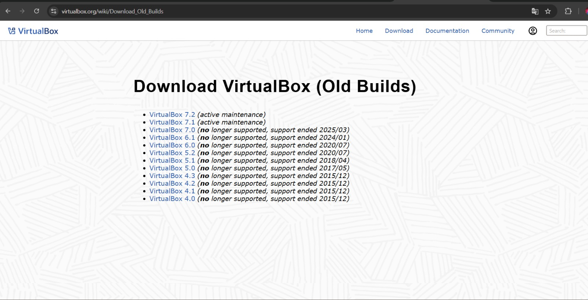
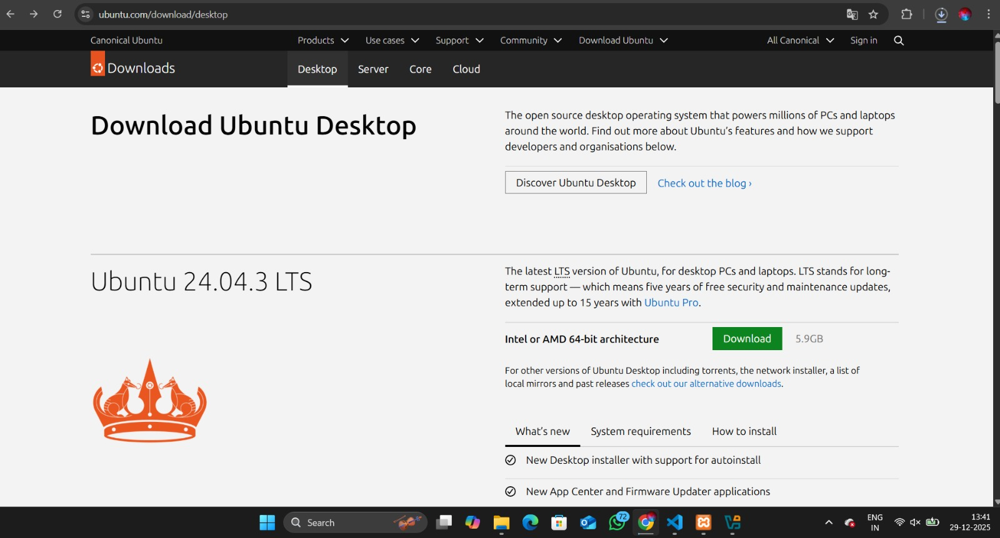
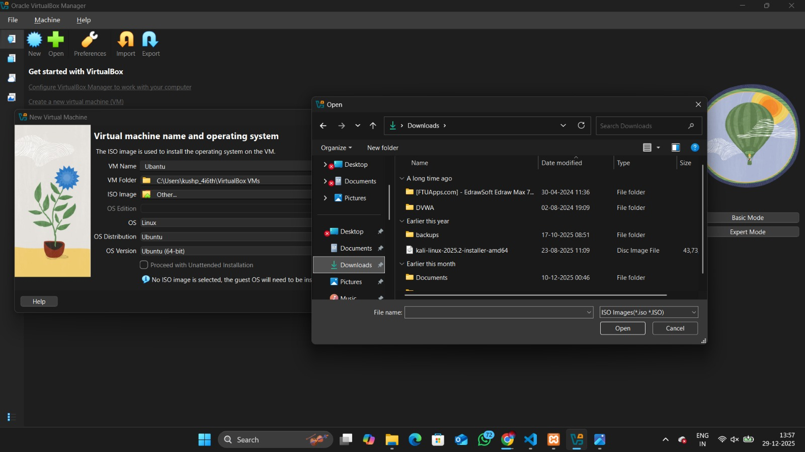
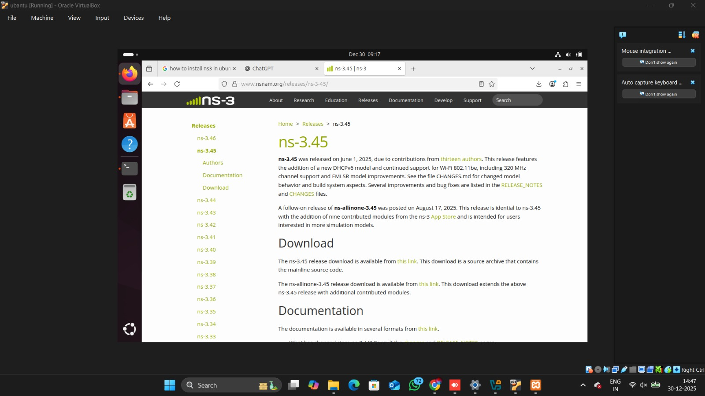

Step 1: Install Oracle VM VirtualBox
Oracle VM VirtualBox is a virtualization software that allows us to install
and run Ubuntu Linux inside our existing operating system.
Download Link:
https://www.virtualbox.org
- Download VirtualBox for your operating system
- Run the installer as administrator
- Keep default installation settings
- Allow network permissions if prompted

Step 2: Download Ubuntu Desktop ISO
Ubuntu is a Linux-based operating system officially supported by NS-3.
Official Website:
https://ubuntu.com/download/desktop
- Download Ubuntu Desktop (LTS recommended)
- File size will be approximately 4–5 GB
- Ensure sufficient disk space

Step 3: Create Ubuntu Virtual Machine
A new virtual machine must be created inside VirtualBox to install Ubuntu.
Recommended Configuration:
- RAM: 4–8 GB
- CPU: 2–4 cores
- Disk: 80–100 GB (Dynamically Allocated)
- Click New in VirtualBox
- Name the VM as Ubuntu NS3
- Select Type: Linux | Version: Ubuntu (64-bit)
- Attach the Ubuntu ISO file

Step 4: Install Ubuntu Operating System
Start the virtual machine and follow the Ubuntu installation wizard.
- Select language and keyboard layout
- Choose Normal Installation
- Create username and password
- Wait for installation to complete and restart
Step 5: Update Ubuntu System
Updating the system ensures all packages are up to date.
sudo apt update && sudo apt upgrade -y
Step 6: Install NS-3 (Only 3 Commands)
NS-3 is installed using the official Git repository.
Only three commands are required.
git clone https://gitlab.com/nsnam/ns-3-dev.git
cd ns-3-dev
./ns3 configure && ./ns3 build
The build process may take several minutes depending on system configuration.

Step 7: Verify NS-3 Installation
Run a sample program to verify the installation.
./ns3 run hello-simulator
If the output displays Hello Simulator,
NS-3 has been installed successfully.